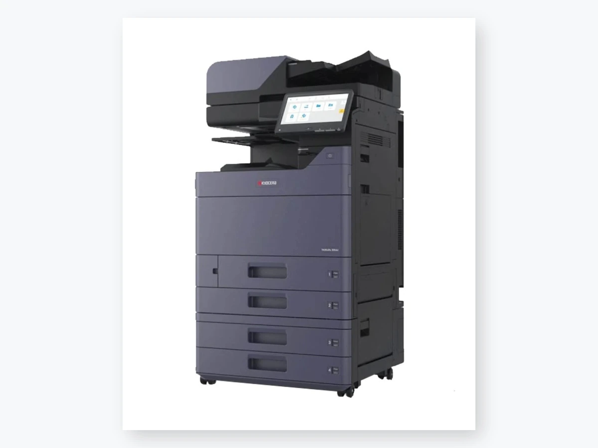
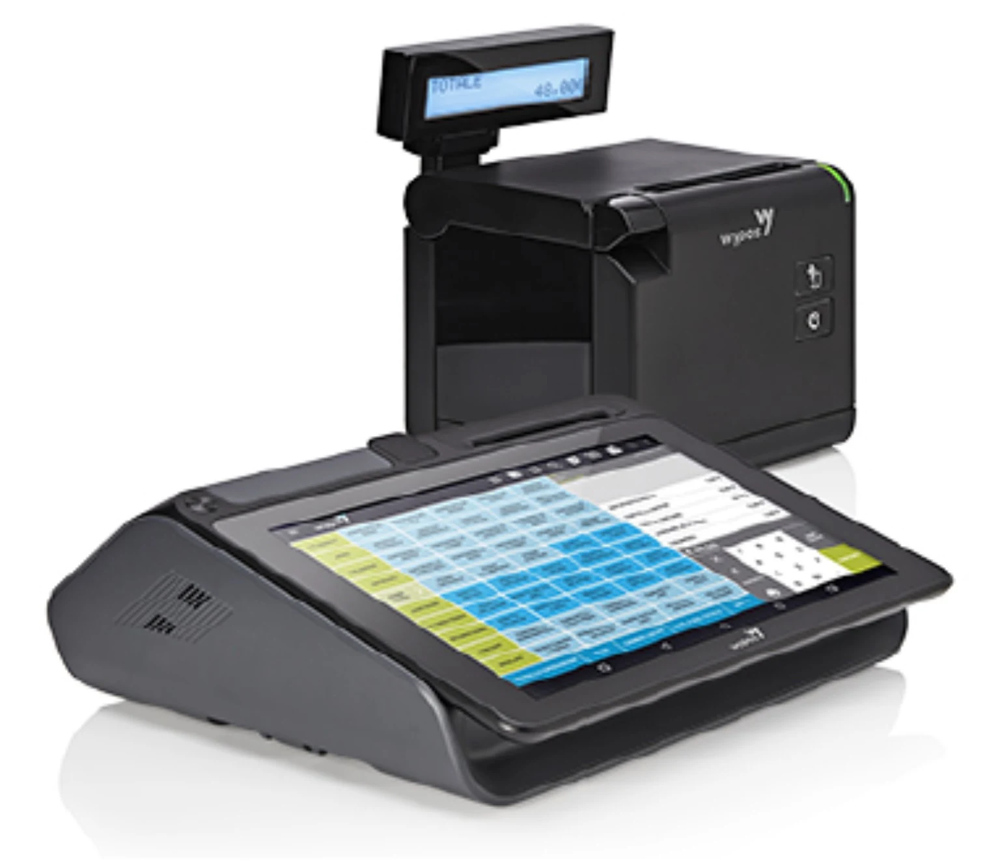
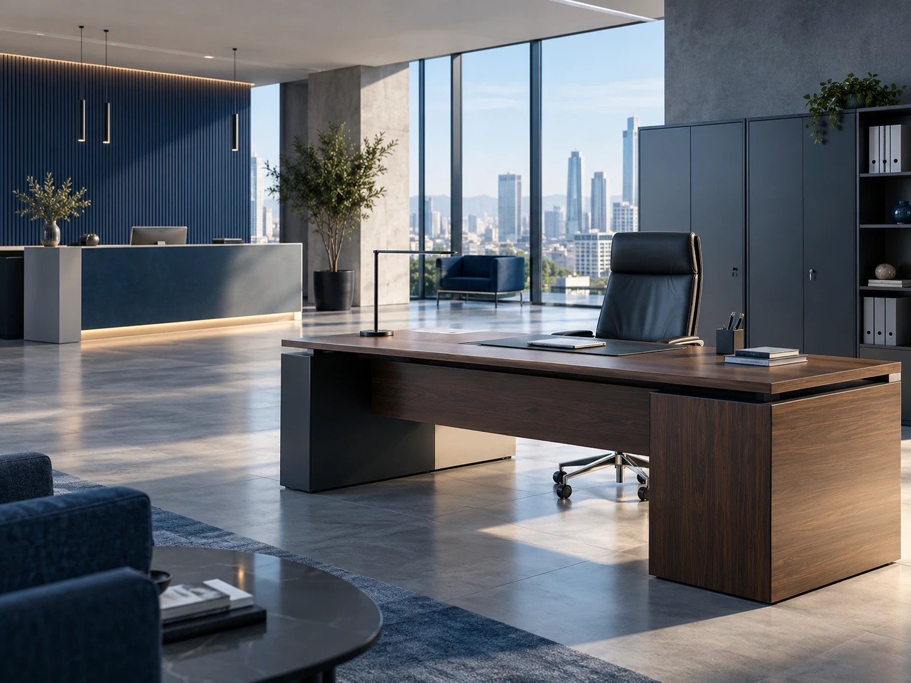
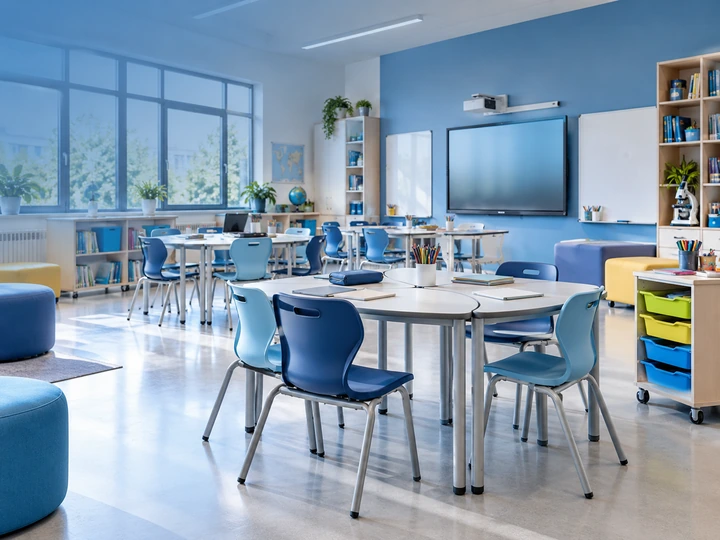
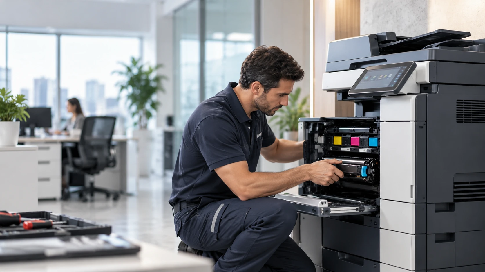

Contattaci
Raccontaci ciò che ti serve: una multifunzione, un registratore di cassa, un arredo oppure un intervento tecnico.
DUEMME S.r.l. affianca aziende, professionisti, scuole ed enti pubblici di Siracusa e provincia. Vendita, noleggio e assistenza tecnica di multifunzioni, registratori telematici e arredi per ufficio, con un unico referente dalla scelta all’installazione e all’assistenza.
Una proposta completa per uffici, attività commerciali e strutture scolastiche, con prodotti, servizi e supporto tecnico.

Fotocopiatrici e multifunzioni a SiracusaVendita, noleggio e assistenza di fotocopiatrici e sistemi multifunzione per Siracusa e provincia.Scopri di più
Registratori telematiciRegistratori di cassa e soluzioni per attività commerciali e punti vendita.Scopri di più
Arredo ufficioScrivanie direzionali, sedute ergonomiche, reception e armadi metallici.Scopri di più
Forniture e scuolaToner, carta, arredi e attrezzature scolastiche, anche per progetti finanziati.Scopri di più
Assistenza tecnicaSupporto per macchine da ufficio e registratori telematici; interventi su richiesta.Richiedi assistenzaConcessionari Olivetti a Siracusa e provincia per macchine d'ufficio, multifunzioni e registratori di cassa, insieme a una selezione di altri marchi specializzati.
Un percorso semplice, dalla scelta delle soluzioni alla messa in funzione.
Raccontaci ciò che ti serve: una multifunzione, un registratore di cassa, un arredo oppure un intervento tecnico.
Valutiamo le esigenze e, quando necessario, organizziamo un sopralluogo per formulare la proposta più adatta.
Ti supportiamo nella consegna, messa in funzione e successiva assistenza sulle apparecchiature.
Da Viale Scala Greca 157 a Siracusa, DUEMME è un punto di riferimento per richieste di vendita, noleggio, forniture e assistenza dedicate ad attività del territorio.
Ci rivolgiamo ad aziende, studi professionali, negozi, scuole ed enti pubblici, con proposte adeguate alle loro esigenze.
Scopri le nostre fotocopiatrici e multifunzioni a Siracusa, con soluzioni per vendita, noleggio e assistenza.
Indicazioni per la nostra sedePer lo smaltimento dei toner esausti e la gestione dei rifiuti aziendali, scopri il nostro partner Ecotek S.r.l., specializzato nei servizi ambientali.
Visita il sito EcotekDUEMME S.r.l. offre vendita, fornitura, noleggio e assistenza per chi lavora in ufficio, nel commercio e nelle strutture scolastiche. Un'unica realtà per apparecchiature, arredi e materiali di consumo.
Soluzioni diversificateMacchine per ufficio, registratori telematici, arredi e forniture.
Formule flessibiliVendita, fornitura e noleggio in base alle esigenze.
Supporto tecnicoAssistenza sulle apparecchiature e informazioni sui servizi.
Hai bisogno di aiuto con una multifunzione o un registratore telematico? Descrivici l'apparecchiatura e il problema riscontrato.
Compila il modulo per preparare una richiesta di preventivo, informazioni o assistenza tecnica.
Per una risposta più precisa, indica nel modulo il prodotto, il modello oppure il tipo di intervento richiesto.